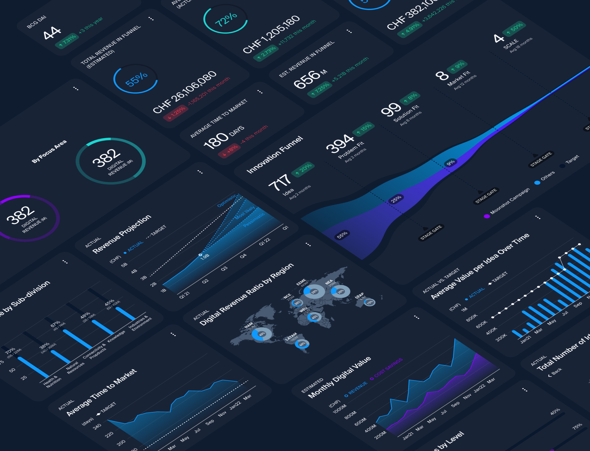

Product design:
Dashboard for Innovation
Creating a beautiful and functional dashboard that shows innovation projects in the innovation funnel to track progress and improve its exposure, using the very innovation funnel model in our development process.
CONTRIBUTION
Design team lead
Research
UX/UI design
SUMMARY
My client was seeking for an effective way to visualize their progress after adopting the innovation funnel methodology. We, a team of 3 designers, designed a beautiful dashboard that provides an at-a-glance overview of the entire innovation funnel and details of each innovation project. Together with 2 developers and 1 data analyst, we also delivered an MVP powered by PowerBI. We applied an adapted innovation funnel methodology ourselves too, from problem validation, concept validation to creating an MVP. During the process I led the design team and collaborated closely with developers and data analyst. Our design was so successful that it was presented to the CEO and shared during the company’s annual meeting.
THE PROBLEM
A corporation recently had adopted the innovation funnel methodology. There were many initiatives being logged into their project management system (Viima). However the overview of the entire innovation funnel was lacking and the progress of each projects were tracked rather manually. The statistics were kept in an Excel spreadsheet and monthly reports were created based on the spreadsheet in PDFs, which was quite a labor-intensive. Because of this, innovation managers and vice presidents in various departments were struggling to visualize and track their progress. So we have been told to design a digital dashboard that could track the real-time progress of the innovation projects in the innovation funnel.
PROBLEM VALIDATION
— WITH USER INTERVIEWS
The idea to have a real-time dashboard that will show the progress of the innovation seemed promising. And we wanted to make sure to validate that there were unmet needs that will be resolved by building the dashboard. So we conducted interviews with innovation managers and validated that the problem really exists.
Innovation managers were struggling to gain expose their projects to inspire others. Vice presidents of each department wanted to have an engaging overview of innovations within their department. We also had to meet the chairman’s unmet needs, that he would like to track potential revenue that could be earned by innovation projects in the funnel.
We created personas that represents needs of various end-users.
Along the research process, we learned the following.
• There is a great willingness to use the Digital dashboard.
• There is a need to raise awareness in metrics to measure the success of digital innovation initiatives, and the Digital dashboard can help this.
• Targets are important to show to put the metrics into perspective. Monthly targets are prevalent, and graphs need to support this and show monthly progress.
CREATING CONCEPTS
Based on our learnings, we explored ways to relieve the pain of our personas, and continued creating and improving concepts in an iterative manner.
To give an idea, these are examples of our design strategies and learnings from our user research, that shaped our next design strategies.
VALIDATING ASSUMPTIONS
We created concepts based on validated insights and assumptions. As soon as we had wireframes ready, we continuously validated our concepts with our potential end-users. I made sure that we take a structured approach by documenting our assumptions and validating them via our research efforts. Our assumptions also addressed multiple domains: desirability, business viability and technical feasibility.
UI/UX DESIGN
FROM DESIGN TO MVP
We explored how we are going to power the dashboard. Via a few workshops that was facilitated by me, we created a service blueprint that illustrates how we will power the imagined customer journey with available human and technical resources.
I also facilitated a couple of user story mapping sessions to help creating a high-level backlog with epics and user stories so we can create a functional product that can benefit our intended end-users.

IMPACT
Being a consultant means that you leave your good design with the good hands, and you don't get to stay until your project really blooms and performs. Still, I know we did a great job. How do I know that?
💯 Our very impressed client went directly to their CEO (managing a company with 98,000 employees operating a network of 2,650 offices) to present the beautifully crafted dashboard elegantly showing their innovation proejct progress.
🔥 The dashboard was also presented during their quarterly all-hands meeting.
🌟 I embarked for a new challenge and the project continued after my time. The client was sorry to see me go which was very rewarding as an individual contributor.
Suhwa Lee
suhwa.christina.lee[at]gmail.com